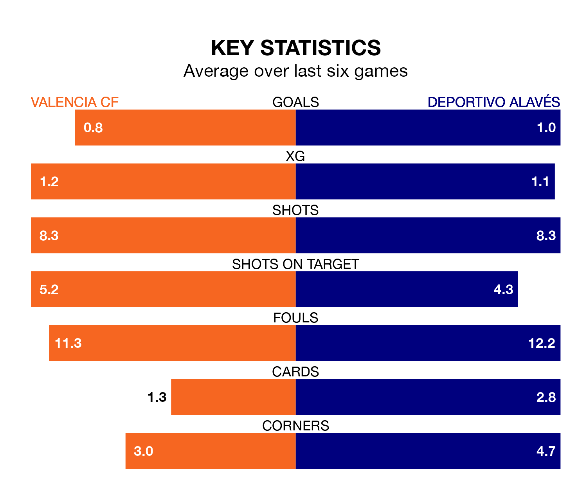

Two of La Liga's meanest defences go head-to-head at Estadio de Mestalla on Sunday, when Valencia CF host Deportivo Alavés.
Only three sides – Real Madrid, Athletic Club Bilbao and Real Sociedad – have conceded fewer goals than Valencia to date: the home side have let in just 38 goals in 33 games.
Alavés have conceded the same number of goals in 33 games, giving them the joint-fourth tightest back line so far this season.
Key to Valencia's home form has been Giorgi Mamardashvili, who has allowed 0.98 goals past him per 90 minutes, compared to 1.03 for Antonio Sivera in the opposite net.
In the last 10 years, Valencia and Alavés have played each other on 16 occasions. Valencia won eight of them, Alavés five, and they drew three times.
On average, Valencia scored 1.7 goals and Alavés 1.2 in those matches.
Their last meeting was on September 2, when Alavés won 1-0 at home.
Valencia are in mixed form in La Liga, with two wins and a draw from their last six games.
With three wins and three losses over that period, Alavés's form is slightly better – they have taken nine points from 18, compared to the hosts' seven.
Valencia are eighth in the table after 33 games, of which they have won 13 and drawn eight, earning 47 points.
Depor are five places behind Valencia in 13th, with 10 wins and eight draws putting them on 38 points.
In Hugo Duro, the home side have one of the league's sharpest shooters so far this season. He has notched 13 goals in 33 appearances, to sit ninth in the scoring charts.
His goal rate of one every 212 minutes is much quicker than that of Luis Rioja, the away team's top scorer with a goal every 479 minutes, and a total of five goals in 33 games.
Valencia's last match was on Monday, a 4-2 loss against FC Barcelona, with Duro Perales and Pepelu getting the goals for Valencia.
Alavés beat Celta de Vigo 3-0 last time out, on April 27, with Carlos Benavídez, Giuliano Simeone and Jon Guridi on the scoresheet.
Updated: 12:00 (UTC), 02/05/24